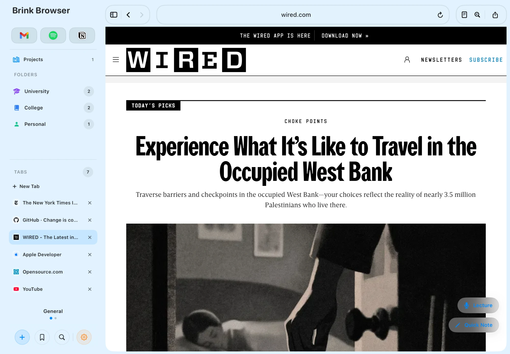
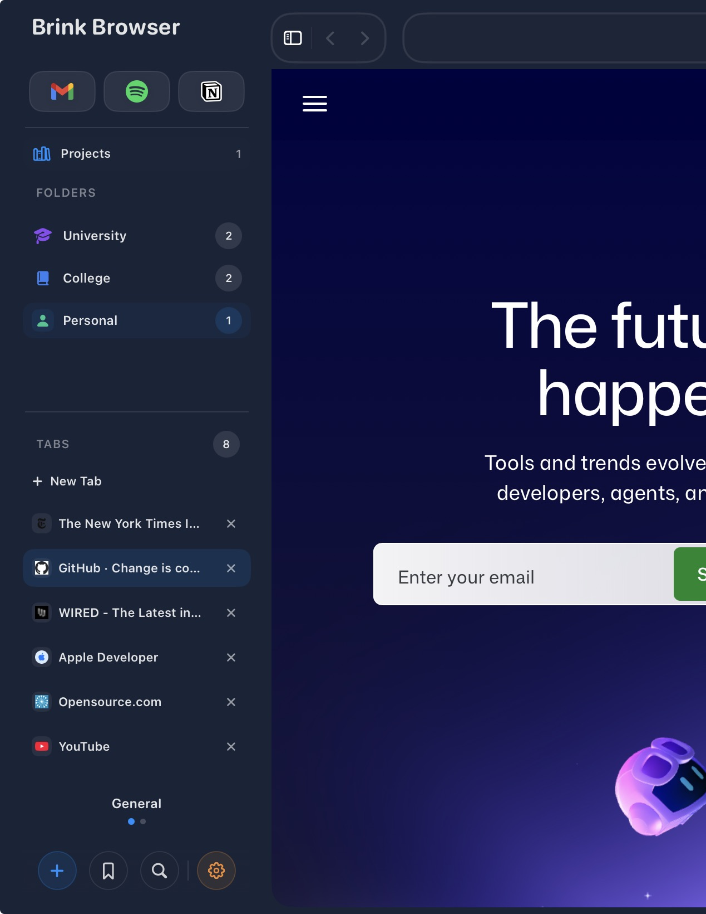
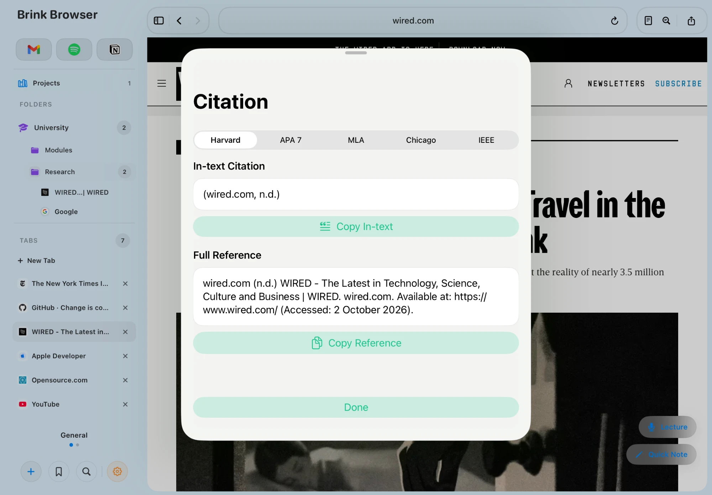

Brink is a research browser for students and deep thinkers. Browse the web, collect sources, organise projects, create citations and protect your focus without constantly switching apps.
£4.99 one-time purchase · No subscription

Brink is designed around the work that happens after you open a webpage, not just the webpage itself.
Research the web in a browser designed around iPad study and research.
Save websites, notes, images, PDFs and lecture recordings as your research grows.
Separate work into projects, then structure each one with its own folders and research.
Create Harvard, APA, MLA, IEEE or Chicago references without leaving the browser.
Use Reader Mode, Study Mode and focus tools to stay with the work when it matters.
Research for an essay shouldn't be mixed into a dissertation, another module or the article you were reading last week. Brink Projects give different pieces of work their own space.
Each project keeps its own folders and saved research together. Switch projects from the sidebar and keep the context of one piece of work separate from another.

Save webpages, notes, PDFs, images and recordings into the project you're working on, then turn the sources you find into properly structured references inside Brink.
Brink can retrieve useful source information such as titles, authors, publications and dates where available. Choose Harvard, APA, MLA, IEEE or Chicago, then copy the full reference or just the in-text citation.

Brink keeps the supporting tools close enough to use without turning the browser into a collection of separate apps.
Strip supported articles back to the content and adjust text size, spacing, width, contrast, themes and images for longer reading sessions.
Open PDFs from the web or saved research, work with supported interactive fields and keep edited documents with your project.
Record while you continue browsing, then keep the audio alongside the notes and sources from the same piece of research.
Reduce access to distracting websites during focused work and combine it with timed sessions when you need stronger boundaries.
Mark useful passages directly on webpages and return to the parts of the source that mattered instead of finding them again.
Choose workspace colours, use light or dark appearances and shape Brink around the way you prefer to research on iPad.
Brink started with a familiar problem: too many research tabs, citations being built by hand, notes living somewhere else and useful material becoming harder to find the longer a project went on.
So Brink was built around the research workflow itself. The browser is still at the centre, but projects, folders, notes, citations, PDFs, recordings and focus tools live around it instead of in separate places.
Brink is independently developed and funded by its users.
Read why Brink was built →“The folder system and citation tools make research feel much less scattered.”Jamie · Beta tester
“The workspace colours make it feel more personal without getting in the way.”Chris · Beta tester
“The animations are smooth and the whole app feels considered.”Mia · Beta tester
“The focus timer stopped me opening Twitter halfway through an essay.”Tom · Beta tester
“Reader Mode and the ad blocker make long articles much easier to work through.”Priya · Beta tester
“I like that it feels like a workspace rather than just another browser.”Alex · Beta tester
“I actually stopped using Safari because I found Brink — it’s a powerhouse of a browser.”Nathan · Brink user
“At first I was sceptical, but I soon realised each feature is actually useful and not bloat. What a great browser.”Sophie · Brink user
“I find it really useful to be able to pin, protect and block websites to stop my children accessing them when they’re doing school work. Keep it up!”Angela & Morgan · Brink user
One iPad browser for finding sources, organising projects, building citations and staying focused.
£4.99 one-time purchase · No subscription